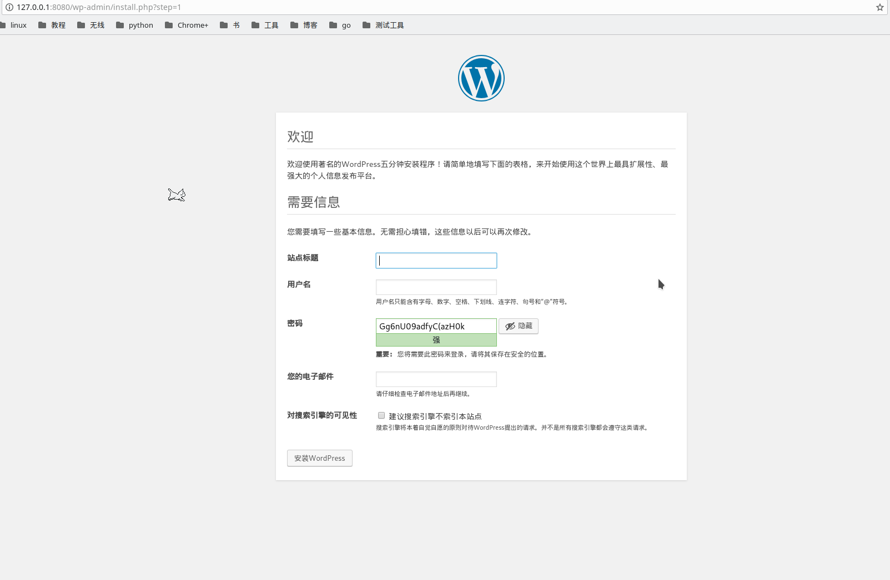
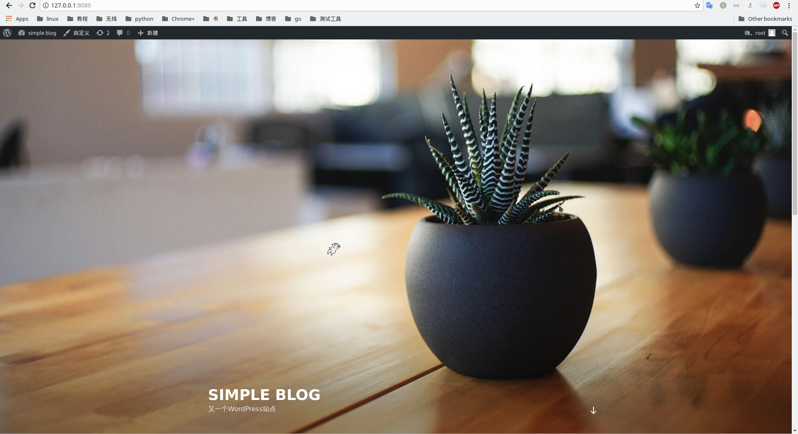

Compose是一个用来定义和运行多容器Docker应用程序的工具.通过Compose,我们使用一个YAML文件来配置应用程序的服务,然后,仅仅一个简单的命令就可以创建和开启所有配置文件中定义的服务
使用Compose基本上需要3个步骤:
- 使用
Dockerfile定义服务的环境.这样它可以运行在任何地方 - 使用
docker-compose.yml定义组成app的服务.这样它们可以在一个孤立的环境一起运行 - 运行
docker-compose up,Compose将会开启并运行整个app
Compose可以管理一个应用程序的整个生命周期:
- 开启,停止,重创建服务
- 查看正在运行服务的状态
- 导出正在运行服务所输出的日志
- 在一个服务上运行一次性命令
Docker Compose安装
在Linux上,可以在github上下载Docker Compose的二进制文件
1 | ]# curl -L https://github.com/docker/compose/releases/download/1.22.0/docker-compose-$(uname -s)-$(uname -m) -o /usr/local/bin/docker-compose |
开始使用Docker Compose
那么,让我们用wordpress来做个示范吧
第一步,定义应用程序的环境
使用Compose,首先需要定义应用程序的依赖环境.想想看该应用程序需要哪些文件,例如flask应用程序需要写flask启动代码;redis应用程序可能需要编写配置文件等等
这里wordpress由于镜像都做好了,因此并不需要什么环境.不过创建项目文件夹还是需要的
1 | ]# mkdir wpcompose |
要注意的是,如果有应用程序有多个服务需要依赖环境,最好为需要的服务都创建一个子文件夹,在其子文件夹中构建镜像
第二步,创建Dockerfile
在这一步,我们需要为需要自定义镜像的服务构建Dockerfile,这应该在每个服务的子文件夹中进行
wordpress所需要的镜像都已经收录在官方镜像中了,同不需要自己构建
第三步,在Compose文件中定义服务
在项目文件夹中创建一个名为docker-compose.yml的文件,其定义各个服务
1 | version: '3' |
该compose文件定义了两个服务:wordpress和mysql.其中wordpress服务:
- 使用名为wordpress的镜像
- 重启策略设为一旦停止运行,立即重启
- 端口映射为主机端8080端口:容器80端口
- 设置环境变量
WORDPRESS_DB_PASSWORD的值为example.其相当于docker run -e VARIABLE=VALUE ...
第四步,使用Compose命令构建并运行应用程序
- 在项目文件夹,使用
docker-compose up命令开启应用程序
1 | # root @ study in /home/staight/composetest [17:36:14] |
- 在浏览器中访问
127.0.0.1:8080,查看wordpress是否运行

填写信息ing…

测试成功!
小结
Docker Compose是一个相当有用的工具,对于多容器组合运行时,可以节省很多时间
这篇文章仅仅是对Docker Compose的基本性了解,以后还有待补充与完善